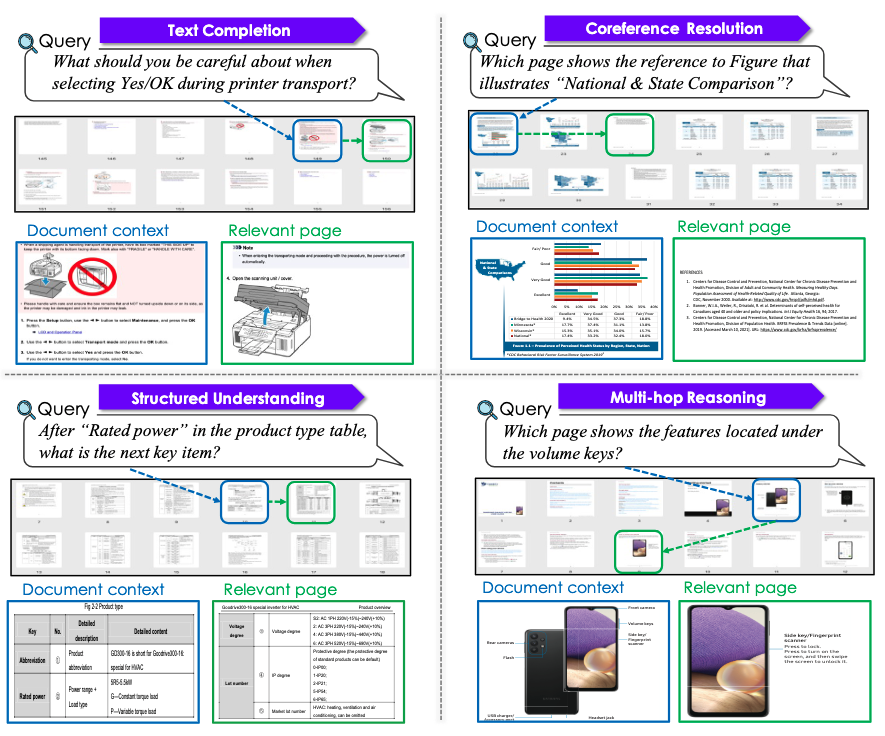
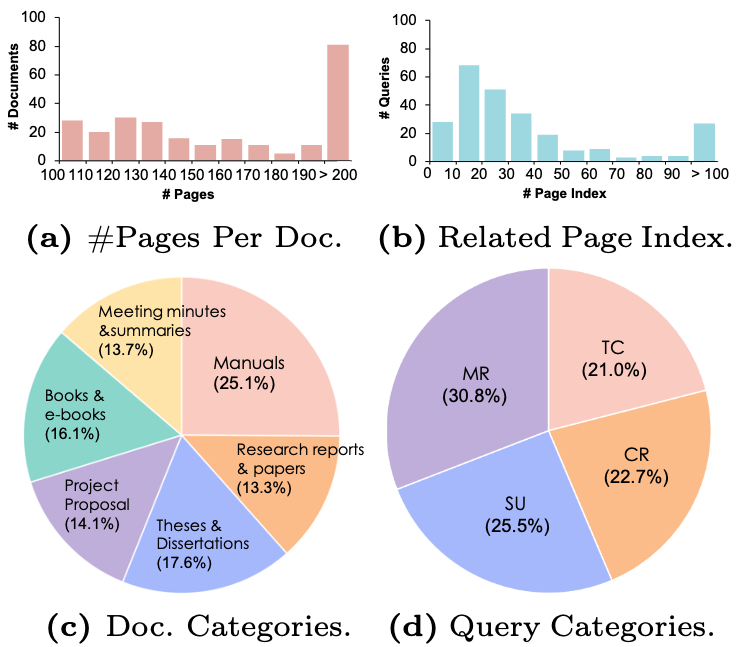
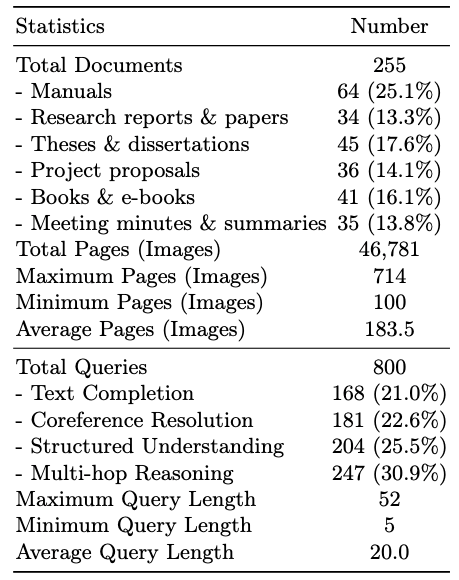
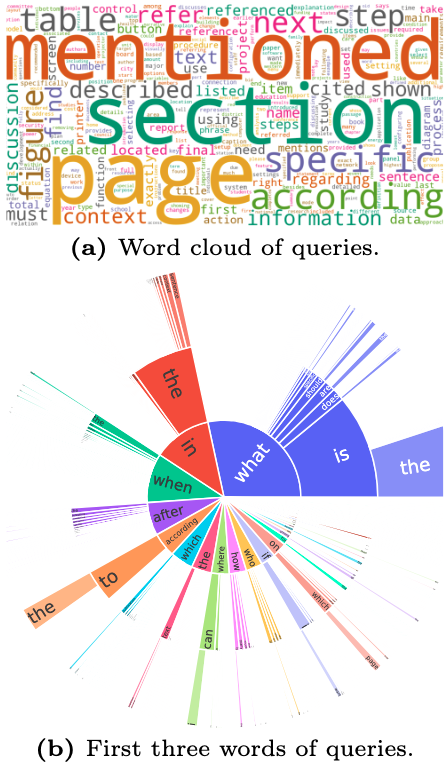
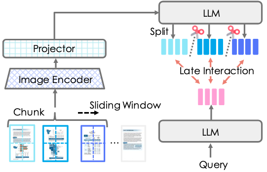
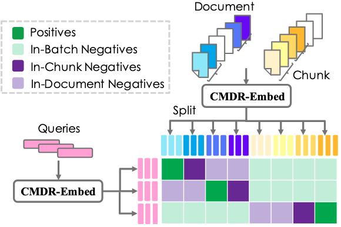
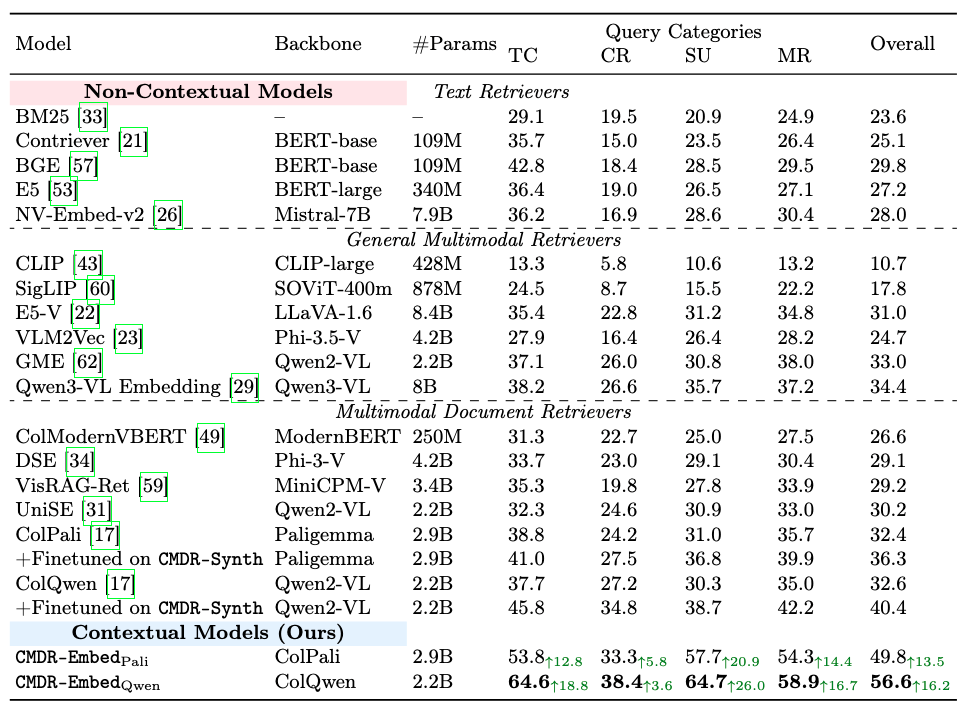

We introduce Contextual Multimodal Document Retrieval (CMDR), a new multimodal document retrieval task in which a system must retrieve relevant pages from a multi-page document (i.e., an ordered set of document images) while leveraging the document context.

CMDR-Bench is designed to measure four skills in retrieval models:

Dataset distribution of the CMDR-Bench.

Key statistics of the CMDR-Bench.

Distribution of queries in the CMDR-Bench.
Unlike non-contextual retrievers (e.g., ColPali), which encode each page independently and thus fail to capture cross-page context, CMDR-Embed encodes not only the content of the page itself but also explicitly incorporates contextual information.

To enable cross-page interactions within a document, we adopt a chunk-then-split strategy. Consecutive pages are first encoded together, and the resulting representations are then split into page-level embeddings (i.e., sequences of token-level embeddings).

Because CMDR-Embed encodes multiple pages jointly, representations from different pages in the same document can be mixed, which weakens page-level discriminability. To address this issue, we propose a new contrastive learning framework, Contextual Multimodal Contrastive Learning (CMCL). Specifically, we reinforce the standard InfoNCE objective by introducing two types of context-aware hard negatives: In-Chunk Negatives, which are different pages within the same chunk, and In-Document Negatives, which are other chunks from the same document. Intuitively, In-Chunk Negatives are more effective when similar context appears on nearby pages, whereas In-Document Negatives are particularly helpful when information similar to the relevant page appears on distant pages outside the current chunk. This design prevents neighboring pages from becoming overly similar and ensures that each page maintains a distinct representation, even when contextual information is shared.
CMDR-Embed, which leverages contextual information, significantly outperforms models that do not consider the document context. Importantly, this performance gain cannot be attributed solely to the training data. Even when trained on the same data, the non-contextual models ColPali and ColQwen still underperform compared to our contextual models CMDR-EmbedPali and CMDR-EmbedQwen. CMDR-EmbedQwen emerges as the strongest retriever in this setting, achieving an average improvement of 16.2 points over the best non-contextual baseline. These results demonstrate that explicitly modeling document context yields benefits beyond what existing approaches can capture.

@inproceedings{tanaka2026cmdr,
title={CMDR: Contextual Multimodal Document Retrieval},
author={Ryota Tanaka and Taku Hasegawa and Kyosuke Nishida},
booktitle={Proceedings of ECCV},
year={2026},
}